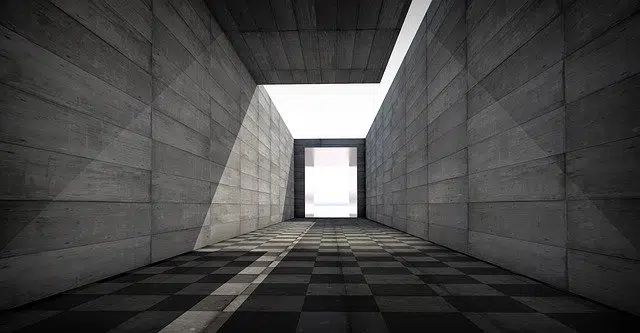

La perspectiva es el arte que se dedica a la representación de objetos tridimensionales en una superficie bidimensional (plana) con la intención de recrear la posición relativa y profundidad de dichos objetos. La finalidad de la perspectiva es, por lo tanto, reproducir la forma y disposición con que los objetos aparecen a la vista.
Se conoce como perspectiva tanto a esta técnica como a la obra o representación que se ejecuta mediante este arte. Por ejemplo:

Una vez que conocemos las reglas básicas, trabajar con las distintas perspectivas no es demasiado difícil, ya que más que responder a leyes estéticas responden a ciertos principios matemáticos, que en cuanto los practiquemos empezaremos a dominar.
Es recomendable usar lápices mecánicos que nos permitan trabajar con gran precisión, o en su defecto, utilizar lápices bien afilados. Cabe evitar el uso de lápices blandos (B, 2B, etc.).
Conviene mantener los instrumentos de trabajo (regla, escuadra, cartabón) bien limpios. Podemos usar un trapo, pañuelos descartables o toallitas húmedas.
Hay diversas maneras o métodos de representar el espacio; llamamos perspectivas a estos métodos.